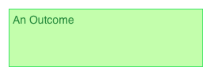
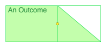
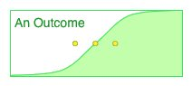

Why are we making this tool?
Probabilistic, temporally uncertain planning domains are complex. Our objective, in a way, is to make automated planning available to the masses. Well, those masses that happen to be involved in project planning. To believe that users within this group, who our outside the automated planning community would work with a system that either accepts just PDDL or some shallow abstraction over PDDL is unrealistic, stupid or lazy (take your pick).
What should it do?
We're starting simple.
We want an application, a Single Document Interface (SDI) application, that allows someone to manipulate (view, edit) a single Brazilian action.
There are two key requirements.
- The system must be easy to use and learn for someone who knows little about automated planning and thinks that a Normal Distribution relates somehow to the number of freaks (or lack thereof) in their office.
- At the same time it must be fast and powerful. After someone has become familiar with the application they should not feel hindered by the representation that we have adopted.
The Main Features
We are using a restricted model of a Brazilian Action. We assume only one
deterministic delayed effect set and only one probabilistic set of outcomes.
The main window in the application is the Workspace, where the Deterministic Outcome and Probabilistic Outcomes are presented on a screen divided into units of time. The columular divisions of time extend down from the top of the workspace, where a header row - the Day Bar lists the unit of time and counts up from 1.
The deterministic outcome will always be present in any Workspace, but probabilistic outcomes can be added, removed and reordered. Each outcome is coloured and labelled and these can be changed. Each probabilistic outcome has a probability associated with it that can also be changed.
There are 'hot-areas' on each of the Outcomes that can be clicked to define preconditions and effects. These visibly change when a condition or effect is defined for an outcome.
The durations of each outcome can be played with by changing duration parameters, changing the duration type and setting the maximum duration.
The application will provide online context sensitive help for major components and tooltips for all GUI items within the Workspace.
The application will read from and write to a single xml document, describing a single Brazilian Action.
Usage Scenarios
There is a single usage scenario for this application: someone opens the application, selects an Action or creates a new one, manipulates the Action and then either discards their work or saves it to a file.
Key Abstractions
A Brazilian action contains a number of key abstractions, that the Workspace will represent graphically.
The Deterministic Outcome
Each Brazilian action has a deterministic effect set, represented as a coloured bar across the workspace.
The bar begins at the start of the Workspace's initial time unit. It extends up until its duration's maximum duration value (durations are discussed in more detail later).
A deterministic outcome has a duration of a specific type. It is possible to change the duration type by selecting from a drop-down list of duration types. This drop down list is only visible if the mouse is inside the outcome or the outcome is selected.
An Outcome can be selected by clicking the background (i.e. Not one of the contained GUI elements) of the outcome.
A deterministic outcome has 'hot areas' for defining conditions and effects. These are small rectangles on the left and right where the action Precondition and deterministic effects can be defined respectively.
A deterministic outcome is labelled with the name of the entire action. Ordinarily the label is a static block of text, moving the mouse into, or selecting the outcome however, causes the label to appear as an editable text-field.
Probabilistic Outcomes
A Brazilian action can contain zero or more probabilistic outcomes. A probabilistic outcome, is in many ways identical to a deterministic outcome. The main difference is that it has a discrete probability of occurrence.
The Workspace may contain multiple probabilistic outcomes, with Outcomes being stacked vertically. Each Outcome is left aligned, to the right of the deterministic outcome. This is as the probabilistic outcome will occur after the deterministic outcome has completed.
Unlike the deterministic outcome, a probabilistic outcome does not contain a condition hot area. In future versions we will permit conditional effects to be defined.
When a probabilistic outcome is created it can be created with a default probability. A default probability means that the probability is only shown when the outcome is selected or the mouse is over the outcome. The value of a default probability is one minus the sum of specified probabilities over the number of outcomes with default probabilities. Once an outcome has been changed from a default probability (by entering a value into the probability field) its probability is specified and no longer considered default.
If the user attempts to define a probability that is not a number or if the sum of the probabilities is greater than one a warning dialog box must be presented and focus not allowed to leave the text field.
Note, an alternative is to simply underline the offending text field with a red line. This raises complications - what if an additional field is added, should that be underlined? Can an action be saved in this state?
Duration Types
Each outcome has a duration associated with it and that duration has a specific type. Each duration type is a representation over a specific probability distribution. The probability distributions considered in the first version are:
- Fixed distribution
- Uniform distribution
- Normal distribution
- Exponential distribution
The representation of a duration for a fixed distribution is very simple and corresponds to the traditional representation of a task in a Gantt chart. The outcome is a solid bar of some fixed height that extends from the start of the outcome rightward for the length of the fixed distribution. The figure below shows the representation of a fixed duration.

The representations of the other, uncertain, duration types are a generalisation of the representation of the fixed distribution. Each is drawn as a shaded plot of its cumulative distribution function, with the shading colour being the background colour of the outcome. This is a generalisation of the representation of the fixed duration, as the height of the plot at a specific time point indicates the probability that the task will last at least that long. For uncertain durations with no fixed end point (e.g. the exponential distribution) the right most point of the task indicates the point at which the probability of the duration lasting that long becomes sufficiently small (e.g. 0.1%).
I think 0.1% is sufficient, but we can experiment
with different probabilities. It might make sense perhaps to have it partially depend upon the distribution type.
For the fixed distribution, this is an adequate representation; it's possible to completely define the distribution with this framework. For other distributions however, additional parameters are required. Each of these additional parameters are represented and can be manipulated graphically, within the outcome. For example, the Uniform distribution will require the minimum value to be set. This is represented as a small coloured circle that can be dragged from the left to the right, setting the minimum value point. As the circle is dragged, the plot of the CDF is updated to reflect the new minimum value. With this addition it is possible to fully represented the uniform distribution. The figure below shows the representation of a duration with a uniform distribution.

For the normal distribution, shown in the figure below, three circles will be required: one representing the mean and the other two the left and right first standard deviations. The circles will be interlinked, so moving the left standard deviation will cause the right standard deviation. Moving the mean will cause the standard deviations to move also. In addition, moving the maximum duration of the outcome will update all three.

This image is back to front.
With a normal distribution, what happens if the parameters cause a large chunk of the pdf to fall beneath a probability of 0. How should this be represented graphically? How should the planner sample from this?
For the exponential distribution one circle will be required, representing the mean duration value. An example is shown below.

Condition Hot Area
The condition hot area, a rectangle on the far left of the deterministic outcome, represents the presence of an action precondition and can be clicked to show, and make available for editing, the action's precondition.
When no precondition is defined, the hot area is an unfilled, bordered rectangle to the right of the start of the deterministic outcome. When the mouse is moved over the area, it changes colour indicating it can be clicked. If a precondition is defined the hot area is a solid colour and only changes colour slightly when the mouse is moved hover. When clicked, a dialog box describing the condition appears immediately beneath the outcome.
A Brazilian precondition is a disjunctive, boolean condition tree with and, or, not operators and boolean operators >, <, ≤, ≥ and = over numeric (i.e. function) values. An empty condition dialog box is shown below:

This shows the major features of the dialog box, there is a set operator which operates over a set of atomic boolean operations and additional sub-operation sets. The set operator can be one of 'All of' representing and, 'At least one of' representing or, 'None of' conjunctive negation and 'Not all of' disjunctive negation.
Within each set, rows define atomic boolean conditions. These are either the name of a predicate, or a simple boolean condition over a function value.
Each row begins with a smart, auto-complete text field. It presents a list of all the predicates and functions available to the user. As the user starts entering text the list shortens, presenting the predicates and functions that match the text entered so far.
If the user enters the name of a predicate in the list, then no further action is taken. Pressing return will either move the cursor to the next text field or create a new text field beneath the current text field. If however the user enters the name of a function then two additional text fields will appear - a boolean operation drop-down list containing >, <, ≤, ≥ and = and a text field for entering the right hand side of the boolean operation - restricted to a non-negative integer value in the first version. These text fields have default values of > and 0 respectively. Pressing return from any of these fields will move to the first text field below or create a new a text field beneath the current row. Pressing space in any of these fields will move to the field to the right (if present).
If the identifier of a function in an atomic function condition is replaced with that of a condition, then the two additional right fields are removed. Vice versa, if the identifier of a predicate is changed to that of a function, then the two fields are added with default values.
If text is entered into the first text field that matches neither a known predicate or function then the text is underlined in red and treated as a predicate by the dialog (i.e. no further text fields are added to the right of the field). The tooltip for the text field will change stating that this is text is neither a predicate or function. The context menu for the text field will have additional actions to change the text to a closely spelt existing predicate or function, or to add the text as a new function or predicate.
On the far right of each row is a delete button for deleting the entire row. If there is just a single predicate text field, deleting the text from that text field will also delete the entire row.
In the bottom of the current operation set is a drop down button for defining a sub operation set of the current operation set. This is to permit more complex boolean trees. This button adds one of the four operation sets as an element within the current operation set. When the button is pressed, the new operation set is defined and the cursor moves to an empty text field within this new operation set. It should be possible, with the keyboard, to navigate up and down this condition tree, with combinations of Tab and Shift+Tab.
Any changes made to the condition dialog should not need to be explicitly saved by the user. When the condition dialog box is closed the changes are saved automatically. To-do: How should the condition dialog box be closed.
Effect Hot Areas
Effects, present on both deterministic and probabilistic outcomes, are in some ways simpler than conditions - in that they are only conjunctive - but as they support more atomic operations they are in some ways more complex.
The blank Effect dialog is very similar to the blank condition dialog.

The most significant difference is the operation drop-down box to the left of each text field in the dialog box. This can take one of the following values:
- set
- remove
- increase
- decrease
- scale-up
- scale-down
The four bottom operations require that a function identifier be entered into the text field. Selecting one of these operations also causes an additional label 'by' to appear to the right of the text field and an additional text field to appear to the right of the new label. This text field will accept a positive integer argument.
In future versions the text field will accept more complex numerical expressions.
Set operates over either predicates or functions. If a function name is entered into the text field then an additional label 'equal-to' appears to the right and a positive integer numeric text-field appears to the right of this.
Remove operates only over predicates.
On each row, right of all the fields, is a delete button that deletes the entire row.
If a predicate identifier is entered then no further fields are added.
If text is entered into the first text field that matches neither a known predicate or function then the text is underlined in red and treated as a predicate by the dialog (i.e. no further text fields are added to the right of the field). The tooltip for the text field will change stating that this is text is neither a predicate or function. The context menu for the text field will have additional actions to change the text to a closely spelt existing predicate or function, or to add the text as a new function or predicate.
Overall Condition Bar
Each Brazilian action has an overall condition bar. This is represented in the Workspace graphically as a dashed box labelled 'Overall Condition'. When no condition is defined beneath this it states 'Click to add a condition'. When a Condition is defined the Overall condition bar becomes solid and is coloured. Clicking on the bar presents a Condition dialog box over the bar, describing the condition.
The User Experience
When a Workspace instance is loaded it can be initialised either with an action or without. If initialised with an action, the action is inspected and outcomes, conditions and effects added to the workspace. If initialised without an action then a blank action is created, consisting of an empty deterministic outcome of a default length with no conditions or effects. The cursor should be active inside the label text field of the outcome.
If the file cannot be interpreted because it is corrupt or inaccessible, does not match the schema or is not a valid xml document then a warning dialog box should appear. In this case, the Workspace remains blank until either a New blank Action is created or an Action is loaded.
Operations
The Workspace can be manipulated through a number of operations, which are described below and accessible through a menu or toolbar (both, to be defined).
Add / Remove Probabilistic Outcomes
A command should exist for adding a Probabilistic Outcome. The colour of the new outcome is sampled from a palette of colours (defined through the preferences dialog box). When an Outcome is added, it is added with a default probability, and is selected and it's label text field receives focus.
An Outcome can be selected by moving the mouse within the outcome and clicking on the background of the outcome, that is not one of the GUI elements within the outcome (such as the duration type drop down box). When selected, moving the mouse outside the outcome will not cause the drop down box to disappear or the default probability (if present) to disappear.
Selected outcomes can be removed by deletion or cutting. Note, the deterministic outcome can be selected but cannot be deleted.
Drag Probabilistic Outcomes
Probabilistic Outcomes should be able to dragged throughout the workspace. Horizontal movement has no effect on the placement of an outcome, but if an Outcome is moved vertically so that the cursor position of the mouse is above or below another Outcome, then the Outcome being dragged is repositioned to be above or below that outcome respectively.
Sort Probabilistic Outcomes
Outcomes can be sorted either by probability or alphabetically. The sorting by probability is only available if at least one Outcome has a non-default probability.
Copy and Paste Elements
Text from Condition and Effect dialog boxes can be copied and pasted simply and will be enabled by default with the QT framework. It would be desirable to allow an entire Probabilistic Outcome to be selected and copied and pasted. The semantics are relativly straightforward, pasting an Outcome functions just as adding a new Outcome (we will allow Outcomes with identical labels), except when the Outcome has a predefined probability and the new sum of probabilities will be larger than 1.
In this instance there are two means for resolving this.
- The first is to display a warning dialog box, informing the user that the value is now too high. Once closed the text-field receives focus and this does not leave until a value that is sufficiently small is entered. There should be an option on the text field not to display it again.
- The second is to underline the text field text in red. The tooltip text for this will now state the value of the probability is too high. If any additional probabilities are assigned then they too must be underlined in red.
The second is more in keeping with the way we are doing things already.
At the first version we will not consider copying and pasting entire effect or condition blocks.
Undo and Redo Operations
In the first version we will not consider undo and redo operations, beyond what is provided for individual text fields by the QT framework.
The standard way of implementing a custom undo / redo framework is through a command pattern. Each manipulation of an Outcome or element within the Workspace should be implemented as a Command. Each Command has an execute and undo function. The application then maintains a list of commands for different components in the application and undo and redo move backward and forward along this list. Performing a new Command will insert it at the current position and delete all Commands that occur after the current position. I imagine lists will need to be maintained for individual Outcomes and the Workspace as a whole.
One complication is as follows. Suppose we have an Outcome and we change the duration, then add some conditions then we delete the entire Outcome. Deleting the Outcome will be an action on the Workspace, but we must maintain that deleted Outcome - and it's undo / redo list - so that if we undo the delete operation the Outcomes operations can then be undone. The point is, the Command list of an Outcome is much of a property of the Outcome as its duration or colour.
Preferences
The following properties of the application should be customisable through a preferences dialog box:
- Day bar time units (Seconds, Minutes, Hours, Days, Weeks, Years, Custom)
- Time unit width (zoom)
- Outcome colour palette
- Workspace time unit division colour palette
- Default deterministic outcome colour.
Toolbar
The toolbar should contain commonly used commands. In the first version these will be:
- New, a drop down button allowing selection of New Action or New Outcome. The default, if the drop down is not selected, is to create a New Action.
- Cut. Cuts the selected GUI element. This is greyed out if not possible with the current selection.
- Copy. Copies the selected GUI element. This is also greyed out if copying is not possible with the current selection.
- Save. Writes the current action to an xml file. If this has not been saved before, this functions as the Save As menu item. Note: What happens if there are invalid entries in text fields?
- Sort. A drop down button for sorting the probabilistic outcomes in the Workspace. This is only active if there is more than one probabilistic outcome present. The two options in this button are to sort by outcome label (default) and to sort by probability (only active if there is at least one outcome with a specified probability).
Application Menu
To be defined.
Workspace Context Menu
This will interface to the Add Outcome command and the preferences dialog box. When the undo / redo framework is implemented this will interface to the workspace undo / redo command list. It will also interface to the sort outcome command.
Probabilistic Outcome Context Menu
This will interface to the Remove Outcome command, as well as allowing the duration type of the Outcome to be changed and will permit the background colour of the outcome to be changed.
Condition / Effect Dialog Context Menu
Text fields containing predicate or function information should have context menus defined. Each context menu interfaces to cut, copy, undo, redo and select. If the text field contains
Help System
Help can mean lots of things. Here's a by no means comprehensive list:
- FAQs
- User Manuals
- Tutorials
- Technical Support
- Tips of the day
- Hyperlinked Application Help
- GUI Tooltips
In the first version of the application we will concentrate on developing the mechanics for delivering the last two items in the list: A hyperlinked help system and Tooltips.
The hyperlinked help system will be delivered through an online wiki system, allowing users of the system to define their own help content. This will be accessible from within the application (launching the operating systems web browser).
We want this help system to be context sensitive - the user can request help for a particular component of the application. The following components will require context sensitive help:
- The Day Bar
- Deterministic Outcome
- Probabilistic Outcome
- The Workspace as a Whole
- Condition Dialog
- Effect Dialog
Delivering help through a wiki-system means that the context sensitive hooks will have to implemented through a search interface. For instance, requesting help on the Effect Dialog will display a search result for that term over the wiki.
The command to request context sensitive help will be accessible through context menus for the above elements, through a main menu action and toolbar action which both change the mouse so that the next click event will request help for the GUI element it occurred on.
Tooltips are short messages that appear when a mouse is left stationary for a short period of time over a GUI element providing a tooltip.
Tooltips should be provided for every text field and button in the application, condition and effect hot areas, whole outcomes and duration modification circles.